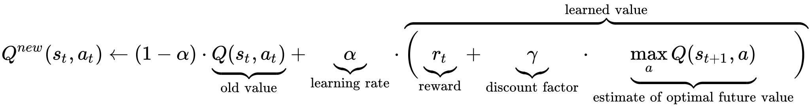
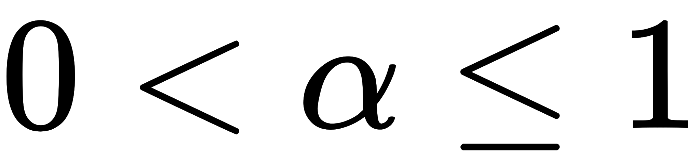
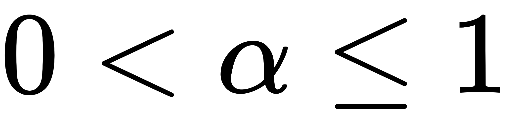

Udacity Deep Reinforcement Learning Nanodegree
Project 1: Navigation
Train an RL Agent to Collect Bananas
Introduction
For this project, we have trained an agent to navigate (and collect bananas!) in a large, square world.
A reward of +1 is provided for collecting a yellow banana, and a reward of -1 is provided for collecting a blue banana. Thus, the goal of our agent is to collect as many yellow bananas as possible while avoiding blue bananas. #####  
Project
The project is composed of five main steps:
- State and action space evalaution
- Benchmark / baseline using a random action policy
- DQN algorithm implementation
- Run DQNs algorithm with different parameters
 
1. State and action space evalaution
The state space has 37 dimensions and contains the agent's velocity, along with ray-based perception of objects around agent's forward direction. Given this information, the agent has to learn how to best select actions. Four discrete actions are available, corresponding to: - 0 - move forward. - 1 - move backward. - 2 - turn left. - 3 - turn right.
The task is episodic, and in order to solve the environment, our agent must get an average score of +13 over 100 consecutive episodes. #####  
2. Benchmark / baseline using a random action policy
Before embarking in builduing a deep reinforcement learning agent, we started by testing an agent that "doesn't learn" but selects actions uniformly at random.
env_info = env.reset(train_mode=False)[brain_name] # reset the environment
state = env_info.vector_observations[0] # get the current state
score = 0 # initialize the score
while True:
action = np.random.randint(action_size) # select an action
env_info = env.step(action)[brain_name] # send the action to the environment
next_state = env_info.vector_observations[0] # get the next state
reward = env_info.rewards[0] # get the reward
done = env_info.local_done[0] # see if episode has finished
score += reward # update the score
state = next_state # roll over the state to next time step
if done: # exit loop if episode finished
break
print("Score: {}".format(score))
After one run the score is 0.0. Although one run is generally not enough to form an accurate view, in this instance we deem to be sufficient to understand that this methodology won't help us to solve the problem. Hence the need for deeep reinforcement learning.
 
3. DQN Algorithm implementation
In general, reinforcement learning involves an agent, a set of states  , and a set
, and a set  of actions per state. By performing an action
of actions per state. By performing an action  , the agent transitions from state to state. Executing an action in a specific state provides the agent with a reward (a numerical score). The goal of the agent is to maximize its total (future) reward. It does this by adding the maximum reward attainable from future states to the reward for achieving its current state, effectively influencing the current action by the potential future reward. This potential reward is a weighted sum of the expected values of the rewards of all future steps starting from the current state.
, the agent transitions from state to state. Executing an action in a specific state provides the agent with a reward (a numerical score). The goal of the agent is to maximize its total (future) reward. It does this by adding the maximum reward attainable from future states to the reward for achieving its current state, effectively influencing the current action by the potential future reward. This potential reward is a weighted sum of the expected values of the rewards of all future steps starting from the current state.
A Q-Learning algorithm is fashioned in such a way that the optimal policy must be discovered by interacting with the environment and recording observations. Therefore, the agent "learns" the policy through a process of trial-and-error that iteratively maps various environment states to the actions that yield the highest reward.
Q-Function
The weight for a step from a state  steps into the future is calculated as .
steps into the future is calculated as .  (the discount factor) is a number between 0 and 1 ( ) and has the effect of valuing rewards received earlier higher than those received later (reflecting the value of a "good start"). may also be interpreted as the probability to succeed (or survive) at every step .
(the discount factor) is a number between 0 and 1 ( ) and has the effect of valuing rewards received earlier higher than those received later (reflecting the value of a "good start"). may also be interpreted as the probability to succeed (or survive) at every step .
In order to discount returns at future time steps, the Q-function can be expanded to include the hyperparameter gamma γ.

The algorithm, therefore, has a function that calculates the quality of a state-action combination:

We can then define our optimal policy π* as the action that maximizes the Q-function for a given state across all possible states. The optimal Q-function Q*(s,a) maximizes the total expected reward for an agent starting in state s and choosing action a, then following the optimal policy for each subsequent state.

Before learning begins,  is initialized to a possibly arbitrary fixed value (chosen by the programmer). Then, at each time
is initialized to a possibly arbitrary fixed value (chosen by the programmer). Then, at each time  the agent selects an action , observes a reward , enters a new state (that may depend on both the previous state and the selected action), and is updated. The core of the algorithm is a simple value iteration update, using the weighted average of the old value and the new information:
the agent selects an action , observes a reward , enters a new state (that may depend on both the previous state and the selected action), and is updated. The core of the algorithm is a simple value iteration update, using the weighted average of the old value and the new information:

where is the reward received when moving from the state to the state , and  is the learning rate ().
is the learning rate ().
Epsilon Greedy Algorithm
The exploration vs. exploitation dilemma is a well known challenge in the field of reinforcement learning and it refers to the challenge with the Q-function in choosing which action to take while the agent is still learning the optimal policy. Should the agent choose an action based on the Q-values observed thus far? Or, should the agent try a new action in hopes of earning a higher reward?
We implemented an ùõÜ-greedy algorithm to systematically manage the exploration vs. exploitation trade-off. The agent "explores" by picking a random action with some probability epsilon ùõú. However, the agent continues to "exploit" its knowledge of the environment by choosing actions based on the policy with probability (1-ùõú).
Furthermore, the value of epsilon is purposely decayed over time, so that the agent favors exploration during its initial interactions with the environment, but increasingly favors exploitation as it gains more experience. The starting and ending values for epsilon, and the rate at which it decays are three hyperparameters that are later tuned during experimentation.
You can find the ùõÜ-greedy logic implemented as part of the agent.act() method in agent.py of the source code here.
Deep Q-Network (DQN)
As name suggest, Deep Q-Learning, could essentially be described as a combination of a deep neural network and reinforcement learning. In this instance a deep network is used to approximate the Q-function. Given a network F, finding an optimal policy is a matter of finding the best weights w such that F(s,a,w) ≈ Q(s,a).
The neural network architecture used for this project can be found in the model.py file of the source code here. The network contains three fully connected layers with 64, 64, and 4 nodes respectively.
Experience Replay
Experience replay allows the RL agent to learn from past experience, as the name would suggest. Each experience is stored in a replay buffer as the agent interacts with the environment. The replay buffer contains a collection of experience tuples with the state, action, reward, and next state (s, a, r, s'). The agent uses a random sapmling as part of the learning step. As the experiences are sampled randomly, we can assume the data to uncorrelated, although it is not always the case. Since a naive Q-learning algorithm could otherwise become biased by or "stable" by correlated (sequential) experience tuples, using random sampling generally helps with convergence issues.
Also, experience replay improves learning through repetition. By doing multiple passes over the data, our agent has multiple opportunities to learn from a single experience tuple. This is particularly useful for state-action pairs that occur infrequently within the environment.
The implementation of the replay buffer can be found in the agent.py file of the source code here.
 
4. Run Experiments
Given that implementing DQN respect to initial benchmark policy was quite successful we only lmited ourselves to different hyperparameters. We managed in more than one occasion to solve in less than 250 episodes.

 
Future Improvements
- instead of a uniform experience replay we could used a "prioritised experience replay" which gives a sampling probability to transitions that are proportional to those transition’s ranks in the replay memory, meaning that useful high TD-Error samples will get sampled more often, decreases learning time even more than uniform experience replay.
- Double DQN Learning which essentially relies on maintaining two Q-value functions QA and QB, each one gets update from the other for the next state.
- Dueling DQN which splits the neural network into two — one learns to provide an estimate of the value at every timestep, and the other calculates potential advantages of each action, and the two are combined for a single action-advantage Q function
 
Project Starter Code
The project starter code can be found below, in case you want to run this project yourself.
Also, the original Udacity repo for this project can be found here.
Getting Started
- Download the environment from one of the links below. You need only select the environment that matches your operating system:
(For Windows users) Check out this link if you need help with determining if your computer is running a 32-bit version or 64-bit version of the Windows operating system.
(For AWS) If you'd like to train the agent on AWS (and have not enabled a virtual screen), then please use this link to obtain the environment.
Place the file in the DRLND GitHub repository, in the p1_navigation/ folder, and unzip (or decompress) the file.
Instructions
Follow the instructions in Navigation.ipynb to get started with training your own agent!